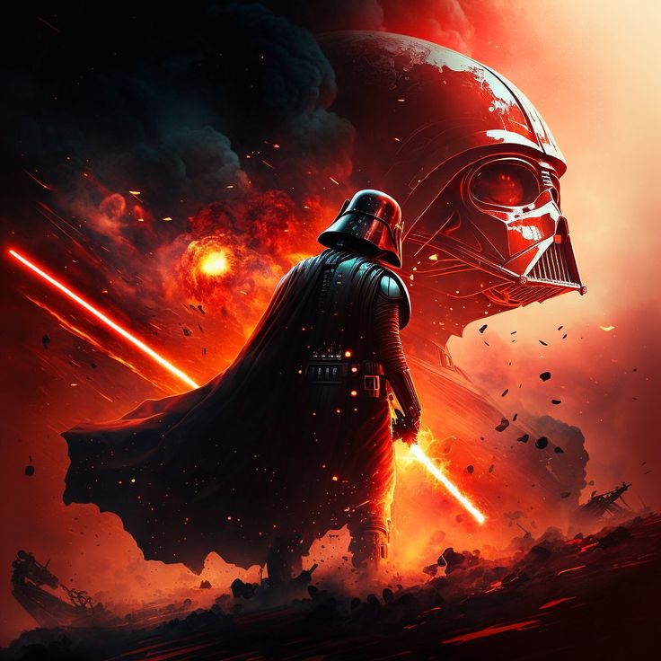

TOP 3 PERSONAJES DE STAR WARS
Top 1:

Darth Vader
Darth Vader, anteriormente conocido como Anakin Skywalker, es un personaje central y trágico del universo Star Wars. Fue un Caballero Jedi prodigioso, considerado el Elegido destinado a traer equilibrio a la Fuerza, pero cayó al lado oscuro tras ser manipulado por el Emperador Palpatine, convirtiéndose en un temido Lord Sith. Conocido por su armadura negra, su voz profunda y su respiración mecánica, lideró la persecución de los Jedi y ayudó a consolidar el poder del Imperio Galáctico. A pesar de su crueldad, en su interior luchaba con el dolor de su pasado y el amor por sus hijos, lo que finalmente lo llevó a redimirse al salvar a su hijo Luke y destruir al Emperador, cumpliendo así su destino antes de morir.s